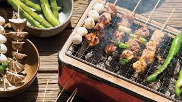

Noodles
Udon

- Udon noodles called thick Japanese noodles.
They are more likely chewier and white than soba noodles.
These type of noodles are prepared both cold and cold.
- For cold: Zaru Udon
- For hot: Tsukumi Udon
can be given as an example.
Soba

- Soba noodles made from buckwheat flour and they are very thin.
Like udon, soba noodles also served both cold and hot.
- Cold served soba noodles are eaten by dipping the noodles into a soya based dipping sauce.
- For cold: Mori/Zaru Soba
- Sansai Soba
can be given as an example.
Ramen

- Ramen is a noodle served with soup comes from China. It's the one of the most popular dishes in Japan.
- Ramen differs according to their soup base.
- Soy Sauce: Shoyu
- Salt:Shio
- Soybean Paste: Miso
- Pork Bone: Tonkotsu
- Another aspect of ramen is that the toppings of it.
There are many toppings which are used in ramen noodles:
Chasu (slices of pork), Menma (bamboo shoots), Tamago (egg) etc.
Curry

Curry originally comes from India.
In Japanese curry; mixture of Indian spices, potatoes, carrots, onions and meat are included.
Generally for meat, pork or beef is the choice.
Yakitori

Yakitori is a grilled chicken skewers and it is cooked over charcoal.
According to the chicken parts used, yakitori differs;
Momo: made from chicken thigh
Torikawa: made from strips of fatty chicken skin
Tebasaki: made from chicken wings
Okonomiyaki

Okonomiyaki is a dish similar to pancake, however it does not have a sweet taste.
Rather, in okonomiyaki, batter and cabbage aare included. Also there can be other ingredients inside the okonomiyaki.
In Japan, to et okonomiyaki, the restaurants have teppan, iron griddle in other words, in their tables so that people can cook their meal with the ingredients they want.
There are two types of cooking style of okonomiyaki: Kansai style and Hiroshima style